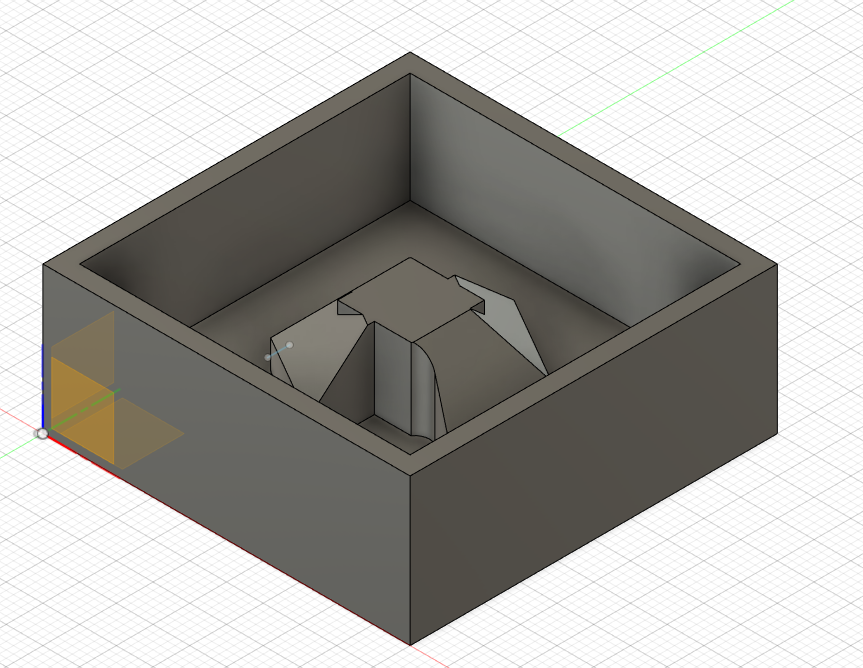

CNC is a subtractive manufacturing process which typically employs computerized controls and machine tools to remove layers of material from a stock piece—known as the blank or workpiece—and produces a custom-designed part. Which in layman terms means the machine cuts layer by layer until it finished the design that you programmed it to cut. In further fabrication lab, we were tasked to CNC many things, but for this demostration, I would like to show the use of Fusion 360 to generate G-Code for my molding and casting.
To start of, of course we first need a design, it was recommended to keep the mold's exterior dimensions at 50mmx50mmax20mm. There should be a gap of 3mm from the interior mold to the exterior and a spacing of 5mm from the interior base to the bottom. Now with this restrictions in mind,we are free to design a mold for anything that we want to cast. I chose to design a simple looking small item as I believed it would fit anywhere.
After designing and making sure of no parts un-machinable, we shall now take our design to another function of Fusion 360, Manufacturing.

Inside here, we must follow a planned set of instruction in order to produce the Gcode for our design. Firstly, GO to 3D>Adaptive Cleaning. This will generate your toolpath. Next select the tool that you're using, in this case, we are using the 3mm flat end mill. Next would be the spindle speed, which we will set to 12000rpm. Since this is a very small model, machines rest will be turned off. Laslty would be the Roughing steps and the fine stepdown.


Now to export our file, we use the pose processor.All we have to do inside is to change the machine Stepcraft UCCNC which the CNC machines in the lab and hit post. This will give us the G code which will allow us to use the machine.
Firstly , we prepare the stock, which in this case, we're using styrofoam. To secure it on the board, we double-sided tape the whole entire back and secure it tightly on the board. Next we must draw a cross using line we've drawn from 4 corners of the stock to mark out the centre.
Once all of these is done, we can use the Stepcraft machine to set xyz as 0 point at the centre of the cross. Whats different this time compared to setting z 0 while milling the PCB is that you will have to set z as 0 directly in contact with the stock.
During the process of milling, we have to constantly hold a vacuum cleaner at the stock as the dust was flying everywhere. This is the finished product.